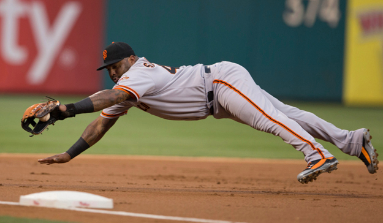

Challenges
We are set out to challenge our CSS Skills with new border techniques. We are tasked to make a sidenbar as well as adding a few links at the top of our page.
Problems
We had quite a bit of problems on this lab. First, we couldn't figure out how to use the sticky feature, and had a hard time getting the links to show up at the top of the page. Overall, we had to do some research looking at the code from Wes'examples to help guide us to getting it right.
Results
After the lab, we have a working site with a sidebar on the right and two working links to the homepage and the CSS at the top. We added colors, borders, and different color texts as well.
